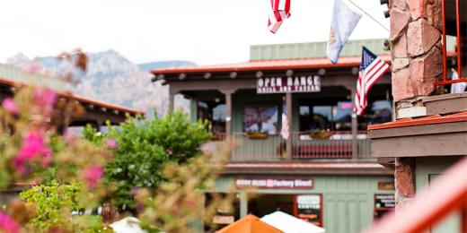
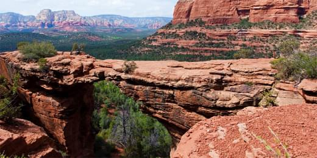

Информационный сайт для туристов Sedona
Преимущества
Седона — небольшой городок в аризоне, заслуживающий большего!
Рассмотрим 5 причин, по которым Седона круче, чем гранд каньон!
Настоящийгородок
Седона не аттракцион для туристов, там течет своя жизнь
 Преимущества города
Жилье
Рекомендуем пожить в настоящем мотеле, все как в кино!
Сувениры
Не только китайского, но и местного производства!
Еда
Всегда заказывайте фирменный бургер, вы не разочаруетесь!
Там естьмост дьявола
Да, по нему можно пройти! Если вы осмелитесь, конечно
 Небольшаяплощадь
Все интересные места находятся очень близко
Красиваядорога
Ехать в Седону из Лас‑Вегаса совсем не скучно!
Малотуристов
Большинство едет в Гранд Каньон и толпится там
Найти гостиницу
Заинтересовались?
Укажите предполагаемые даты поездки, и мы покажем вам лучшие предложения гостиниц в седоне
Найти гостиницу